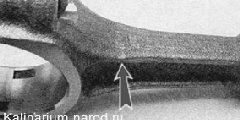

Поршень и шатун двигателя 1,6i - заменаДля выполнения работы потребуются: — нутромер; — пруток из мягкого метала (021 мм). Разборка 1. Снимаем с поршня поршневые кольца. 2. Шилом поддеваем и вынимаем из проточек стопорные кольца поршневого пальца. У новых двигателей зазор между поршнем и цилиндром составляет 0,025—0,045 мм и задается установкой поршней того же класса, что и класс цилиндров. 3. Прутком из мягкого металла подходящего диаметра выталкиваем поршневой палец.
4. Снимаем поршень с шатуна. Подбор поршней к цилиндрам блока 1. Нутромером проверяем износ стенок цилиндров. Диаметры цилиндров разбиты на пять размерных классов (см. табл. 16.4). Класс каждого цилиндра выбит на нижней привалочной плоскости блока цилиндров. Классы цилиндров по диаметру
Небольшой равномерный износ цилиндра (в пределах 0,05 мм) возможно компенсировать установкой поршня другого класса с большим диаметром. Если максимальный износ составляет 0,15 мм и более, требуется расточка цилиндров и установка поршней ремонтного размера. Предусмотрена расточка цилиндров на 0,4 мм и 0,8 мм под размеры ремонтных поршней. 2. На днище поршня нанесены обозначения, где: 2 — класс отверстия под поршневой палец; С — класс поршня; — стрелка для ориентирования поршня в цилиндре (должна быть направлена в сторону привода ГРМ); Г - Группа массы поршня. По диаметру отверстия под поршневой палец поршни делятся на три класса (1, 2, 3) — через 0,004 мм. По наружному диаметру поршни разбиты на пять классов (А, В, С, D, Е) — через 0,01мм (измеряется в плоскости, перпендикулярной поршневому пальцу, на расстоянии 55 мм от днища поршня). По размеру поршни бывают номинальные и двух ремонтных размеров. Поршни номинального размера не маркируются. Поршни первого ремонтного размера изготавливаются с увеличенным на 0,4 мм диаметром и имеют маркировку в виде символа «д ». Поршни второго ремонтного размера имеют увеличенный на 0,8 мм диаметр и маркируются символом «?». Па двигателе все поршни должны быть одной группы по массе. Поршни номинальной группы обозначаются символом «Г>. Поршни с увеличенной и уменьшенной массой на 5 г обозначаются «+» и «е^ соответственно. Класс пальца маркируется краской на его торце. Шатунно-поршневая группа может комплектоваться либо пальцами 2108-1004020 с увеличенной толщиной стенок, либо пальцами 21101004020. Классы шатунов по массе
Классы поршневых пальцев по наружному диаметру и диаметру отверстий под пальцы
На двигатель должны быть установлены шатуны одного класса по массе (см. табл). По наружному диаметру пальцы делятся натри класса (синий, зеленый и красный), через 0,004 мм. Для облегчения подбора пальца к отверстию поршня на его внутренней стороне краской указывается требуемый класс пальца. Требуемый класс пальца указан на крышке шатуна 2. По массе головок шатуны делятся на классы. Маркировка наносится на крышку шатуна 1... ...или краской. Сборка Собираем поршень с шатуном в последовательности, обратной разборке. При сборке шатуна с поршнем убедитесь, что маркировка на шатуне и маркировка на поршне обращены в одну сторону. При установке поршня в цилиндр шатун номером цилиндра должен быть обращен к той стороне блока, на которой находится при.1ив для установки масляного фильтра, а каталожным номером — к переднему концу коленчатого вала. |
|||||||||||||||||||||||||||||||||||||||||||||||||||||||||||||||||||||||||||||